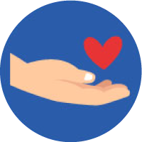

O desenvolvimento pleno dos estudantes passa pela superação da divisão e hierarquização entre o desenvolvimento intelectual e o desenvolvimento emocional. Pensando nisso, a Base Nacional Comum Curricular (BNCC) estabeleceu 10 competências gerais que integram aspectos cognitivos e socioemocionais.
Infográfico
-
Conhecimento
Valorizar e utilizar os conhecimentos historicamente construídos sobre o mundo físico, social, cultural e digital. PARA entender e explicar a realidade, continuar aprendendo e colaborar para a construção de uma sociedade justa, democrática e inclusiva.
Close -
Pensamento científico, crítico e criativo
Exercitar a curiosidade intelectual e recorrer à abordagem própria das ciências, incluindo a investigação, a reflexão, a análise crítica, a imaginação e a criatividade. PARA investigar causas, elaborar e testar hipóteses, formular e resolver problemas e criar soluções (inclusive tecnológicas) com base nos conhecimentos das diferentes áreas.
Close -
Repertório cultural
Valorizar e fruir as diversas manifestações artísticas e culturais, das locais às mundiais, e também, PARA participar de práticas diversificadas da produção artístico-cultural.
Close -
Comunicação
Utilizar diferentes linguagens – verbal (oral ou visual-motora, como Libras, e escrita), corporal, visual, sonora e digital –, bem como conhecimentos das linguagens artística, matemática e científica. PARA se expressar e partilhar informações, experiências, ideias e sentimentos em diferentes contextos e produzir sentidos que levem ao entendimento mútuo.
Close -
Cultura digital
Compreender, utilizar e criar tecnologias digitais de informação e comunicação de forma crítica, significativa, reflexiva e ética nas diversas práticas sociais (incluindo as escolares). PARA se comunicar, acessar e disseminar informações, produzir conhecimentos, resolver problemas e exercer protagonismo e autoria na vida pessoal e coletiva.
Close -
Trabalho e projeto de vida
Valorizar a diversidade de saberes e vivências culturais e apropriar-se de conhecimentos e experiências. PARA entender as relações próprias do mundo do trabalho. e fazer escolhas alinhadas ao exercício da cidadania e ao seu projeto de vida, com liberdade, autonomia, consciência crítica e responsabilidade.
Close -
Argumentação
Argumentar com base em fatos, dados e informações confiáveis. PARA formular, negociar e defender ideias, pontos de vista e decisões comuns que respeitem e promovam os direitos humanos, a consciência socioambiental e o consumo responsável em âmbito local, regional e global, com posicionamento ético em relação ao cuidado de si mesmo, dos outros e do planeta.
Close -
Autoconhecimento e autocuidado
Conhecer-se, apreciar-se e cuidar de sua saúde física e emocional. PARA compreender-se na diversidade humana e reconhecer suas emoções e as dos outros, com autocrítica e capacidade para lidar com elas.
Close -

Empatia e cooperação
Exercitar a empatia, o diálogo, a resolução de conflitos e a cooperação. PARA fazer-se respeitar e promover o respeito ao outro e aos direitos humanos, com acolhimento e valorização da diversidade de indivíduos e de grupos sociais, seus saberes, identidades, culturas e potencialidades, sem preconceitos de qualquer natureza.
Close -
Responsabilidade e cidadania
Agir pessoal e coletivamente com autonomia, responsabilidade, flexibilidade, resiliência e determinação. PARA tomar decisões com base em princípios éticos, democráticos, inclusivos, sustentáveis e solidários.
Close
Figura 01 - Fonte: Imagem desenvolvida pela equipe gráfica do projeto.
Para o Instituto Ayrton Senna, as competências socioemocionais são entendidas como influenciadoras do modo como uma pessoa pensa, sente, decide e age em determinada situação ou contexto.
Ainda, elas podem ser definidas como as competências e os atributos que permitem com que a pessoa possa se relacionar com os demais indivíduos da melhor maneira possível. Como tais habilidades são subjetivas, é difícil identificá-las e analisá-las. No entanto, todas elas podem ser desenvolvidas, melhoradas e aprimoradas ao longo da vida profissional.
Mas por que o desenvolvimento dessas competências é importante?
Realização:
Secretaria de Educação Profissional e Tecnológica
Produção: